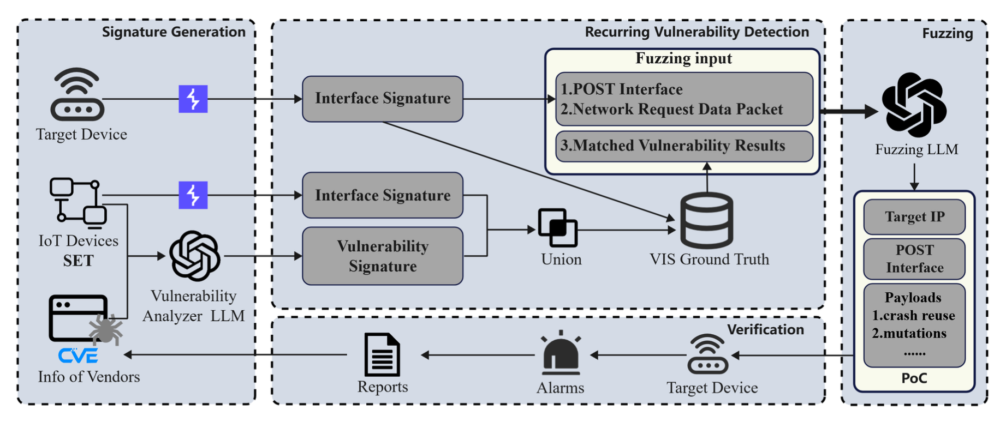
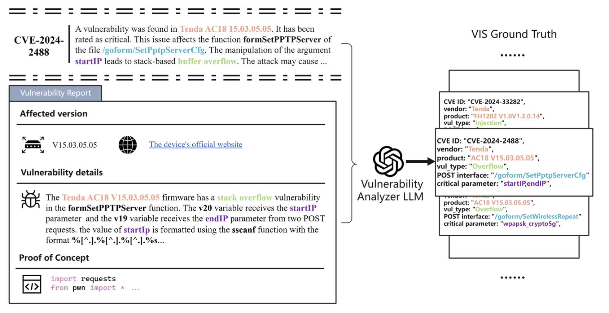
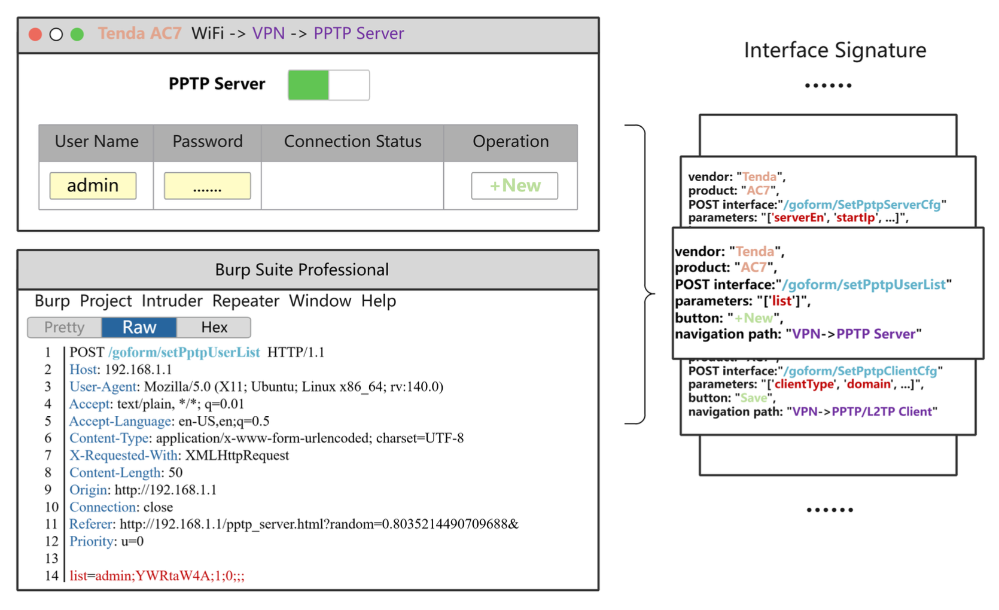
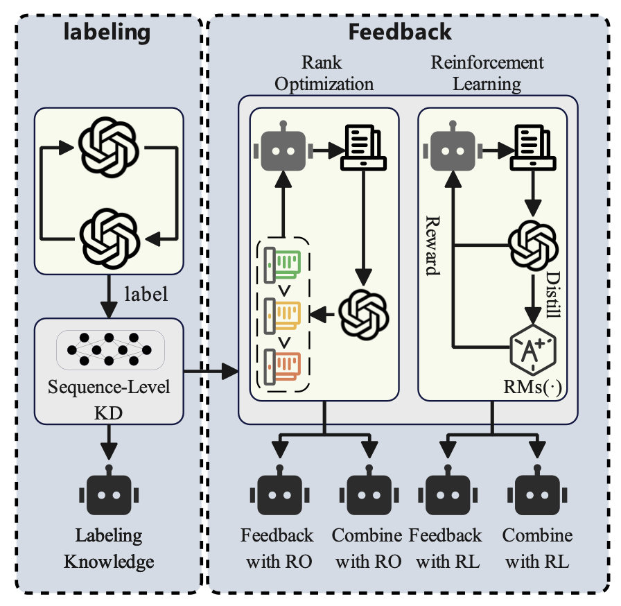
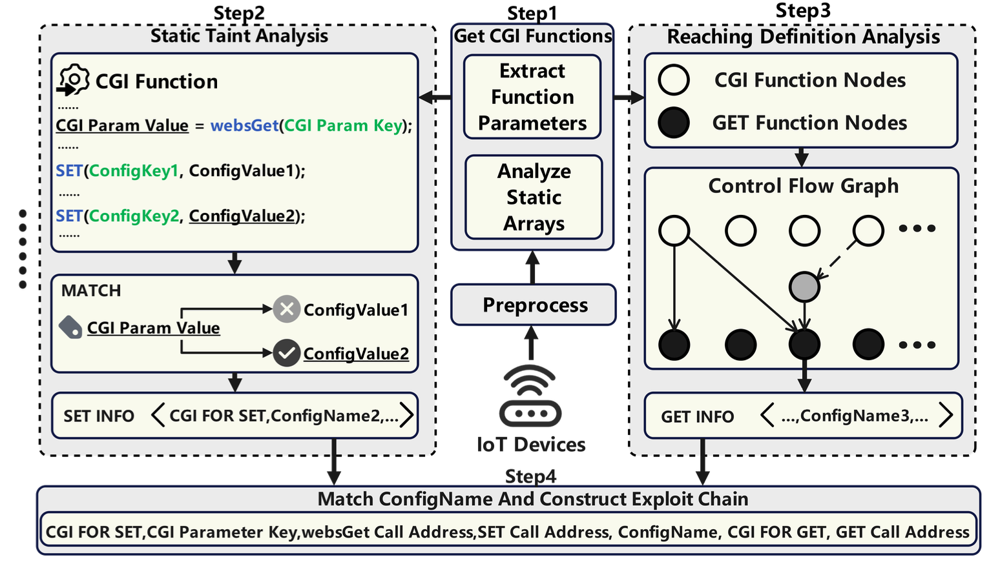

Publications
Click Details to view each paper’s methodology diagram, key findings, and all related resource links.

IoTBec: An Accurate and Efficient Recurring Vulnerability Detection Framework for Black Box IoT devices
Third Author NDSS, 2026 · Accepted
Abstract
The proliferation of IoT devices has driven a rise in vulnerability exploits. Existing vulnerability detection approaches heavily rely on firmware or source code for analysis. This reliance critically compromises their efficiency in real-world black-box scenarios. To address this limitation, we propose IoTBec, a novel firmware and source-code independent framework for recurring vulnerability detection. IoTBec innovatively constructs a Vulner- ability Interface Signature (VIS) based on black-box interfaces and known vulnerability information. The signature is designed to match potential recurring vulnerabilities against target de- vices. The framework then deeply integrates this signature-based detection with Large Language Model (LLM)-driven fuzzing. Upon a match, IoTBec automatically leverages LLMs to generate targeted fuzzing payloads for verification.
To evaluate IoTBec, we conducted extensive experiments on devices from five major IoT vendors. Results show that IoTBec discovers over 7 times more vulnerabilities than the current state-of-the-art (SOTA) black-box fuzzing methods, with 100% precision and 93.38% recall. Overall, IoTBec detected 183 vul- nerabilities, 169 of which were assigned CVE IDs. Among these, 53 were newly discovered and had an average CVSS 3.x score of 8.61, covering buffer overflows, command injection, and CSRF issues. Notably, through LLM-driven fuzzing, IoTBec also dis- covered 25 previously unknown vulnerabilities. The experimental evidence suggests that IoTBec’s unique firmware and source- code independent paradigm enhances detection efficiency and enables the discovery of novel and variant vulnerabilities. We will release the source code for IoTBec and the experiment data at https://github.com/IoTBec.
Method Overview
Figure 1. IoTBec Workflow

Figure 2. Illustration of Vulnerability Signature Extraction with the Vulnerability Analyzer LLM

Figure 3. Illustration of Interface Signature Extraction

WHAT IS THE RISK? EVALUATING THE IMPACT OF KNOWLEDGE DISTILLATION ON LLM VULNERABILITIES
First Author ICASSP, 2026 · Accepted
Abstract
Knowledge distillation has significantly accelerated the devel- opment of efficient language models. With the rapid prolif- eration of these methods in the open-source communities, a systematic evaluation of their implications for model security is urgently needed. To quantify the security risks introduced by various distillation methods, we propose a general and exten- sible evaluation framework that reflects complex, real-world distillation workflows. Additionally, we analyze the impact of the distillation process on models’ tendencies toward harm- ful behavior by extending JailbreakBench with a harm-level dataset comprising 10 malicious query categories. Our results demonstrate that knowledge distillation significantly increases model vulnerability, and joint learning of the two primary forms of knowledge further exacerbates this risk. Furthermore, our analysis reveals different effects across harmful query cat- egories, with the risk levels of discrimination and economic harm showing significant increases that warrant particular at- tention.
Method Overview
Figure 1. Workflow
A demonstration of the general ablation-based pipeline, consisting of knowledge elicitation (from GPT-4) and knowledge transfer via labeling, feedback (RO/RL), or their combination.
Key Results
| Models | Human Judge ASR (Simple Query) | Human Judge ASR (GCG) | Human Judge ASR (AutoDAN) | Human Judge ASR (PAIR) | GPT-4 Judge ASR (Simple Query) | GPT-4 Judge ASR (GCG) | GPT-4 Judge ASR (AutoDAN) | GPT-4 Judge ASR (PAIR) |
|---|---|---|---|---|---|---|---|---|
| 7b (Base) | 8 | 77 | 84 | 82 | 34 | 54 | 90 | 87 |
| 7b (Labeling) | 79 | 86 | 93 | 94 | 85 | 88 | 99 | 100 |
| 7b (Feedback with PPO) | 64 | 82 | 91 | 95 | 98 | 92 | 100 | 97 |
| 7b (Feedback with DPO) | 73 | 80 | 94 | 92 | 97 | 94 | 98 | 96 |
| 7b (Combining with PPO) | 87 | 93 | 97 | 96 | 100 | 100 | 100 | 100 |
| 7b (Combining with DPO) | 85 | 94 | 99 | 96 | 91 | 96 | 100 | 100 |
| 13b (Base) | 2 | 3 | 31 | 3 | 0 | 4 | 45 | 5 |
| 13b (Labeling) | 5 | 16 | 48 | 17 | 11 | 13 | 46 | 15 |
| 13b (Feedback with PPO) | 4 | 14 | 55 | 24 | 12 | 12 | 59 | 27 |
| 13b (Feedback with DPO) | 3 | 10 | 55 | 19 | 19 | 12 | 53 | 25 |
| 13b (Combining with PPO) | 7 | 43 | 46 | 44 | 13 | 33 | 52 | 40 |
| 13b (Combining with DPO) | 5 | 35 | 63 | 56 | 14 | 36 | 57 | 41 |
Attack success rate (ASR) comparison across different distillation configurations under Human Judge and GPT-4 Judge evaluation. Joint knowledge combining methods (especially PPO/DPO-based combinations) substantially increase jailbreak susceptibility in both 7b and 13b models. {#tbl-asr-results}

FirmSV: Detecting Stored Vulnerabilities in IoT Firmware using Static Taint Analysis
Third Author CSCWD, 2026 · Accepted
Abstract
The rapid proliferation of Internet of Things (IoT) devices has introduced severe security vulnerability challenges. While extensive research utilizes static taint analysis for firmware vulnerability discovery, it predominantly focuses on volatile memory, neglecting the security risks associated with configuration items in non-volatile memory (NVM). To address this gap, this paper proposes FirmSV, a taint analysis tool targeting stored vulnerabilities. FirmSV leverages static taint analysis to effectively trace interprocedural data flows originating from configuration items, enabling the detection of these vulnerabilities. Experimental results demonstrate that FirmSV successfully discovered 41 vulnerabilities in mainstream IoT firmware, 29 of which were assigned CVE IDs. FirmSV detected 6.3 times more vulnerabilities than the state-of-the-art (SOTA) tool HermeScan, validating its effectiveness in stored vulnerability detection.